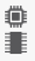
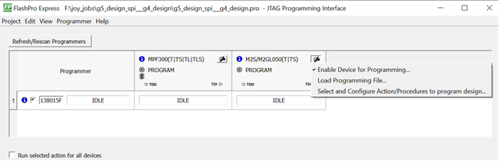
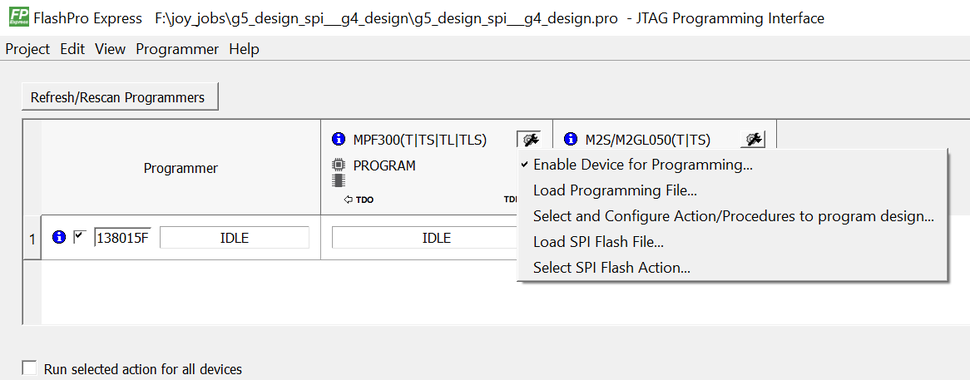
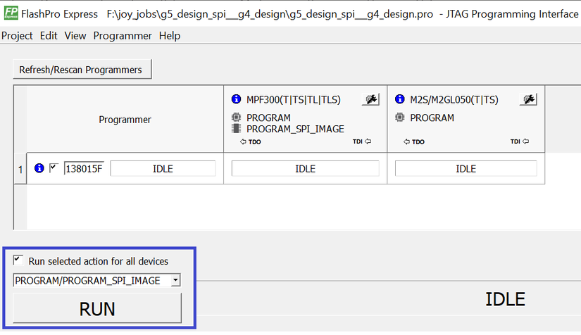
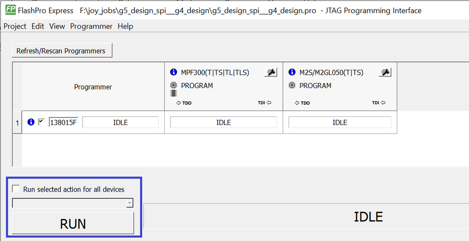
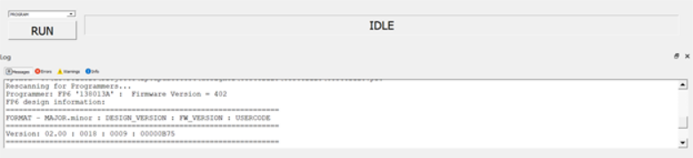
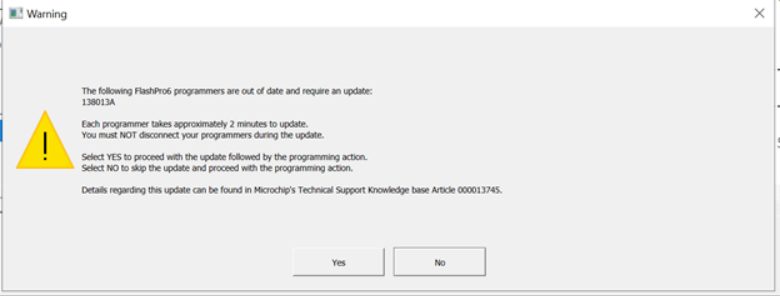
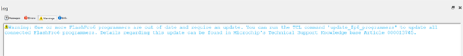

Starting with Libero SoC v12.5, FlashPro Express supports two modes:
Operator mode
Developer mode
Operator mode is a current flow that provides production programming. It is the
default mode and allows you to run selected actions for individual and all devices.
Developer mode allows you to:
Update jobs before running
programming.
Enable or disable chain
devices.
Load design and SPI Flash
Programming files and select different programming actions for each chain device
and SPI-Flash.
Run selected actions for individual and all devices.
You select Operator or Developer mode using the Preference dialog box (Project > Preferences). The preference is saved per user per machine on Windows and per user on
Linux. The mode preference remains the same until you change it.
The FlashPro Express mode can be switched before opening a job. If a job is opened, you
are prompted to confirm closing of the job to save the mode preference after clicking
the OK button.
After a job is opened in Developer mode, each device displays:
An info () icon with device specific
data.
Design icon (). The per-device selected
action appears next to the icon if the Run selected action for all
devices option is unselected.
SPI Flash icon () if SPI Flash programming is available
for the device. The per-device selected SPI Flash action appears next to the
icon if the Run selected action for all devices option is
unselected.
Configure button () providing a menu
of configuration options based on the device. The configure button is enabled
when no programming action is running.
The following list describes Developer mode features:
Device configuration optionsFigure 13-25. Device Options to Program Design

Figure 13-26. Device Options to Program Design and SPI Flash

Enable/Disable device for
programming. The option allows the device to be enabled or disabled (put in
“bypass”). You must load the programming file when enabling a device that is in
“bypass,” with no programming file associated with the device or SPI-Flash. The
device header info tooltip is updated with selected programming action if
enabled or “bypass” if disabled.
Note: The job cannot be saved if
all devices are disabled or if any enabled devices do not have a loaded
programming file. If all the devices are disabled, an actions combo box and
a Run button are disabled.
Load Programming File. The option is available for the enabled devices to load a
different programming file for the target device. FlashPro Express requires all
programming files to be in the local job folder. When loading a programming file
from outside the job folder the file will be copied to the job folder first and
then loaded for the selected device. The user must confirm copying the
programming file to the job folder and overwriting the existing file.
Select a programming action and configure actions and procedures per device. The
option allows the selection of the programming action and configuration of the
actions’ procedures. The option is available for an enabled device that has
programming file loaded, and when the Run selected action for all
devices option is unselected.
Load SPI Flash file. This option allows you to load a different SPI Flash
programming file.
Select SPI Flash Action. The option allows the selection of the programming
action for the SPI Flash. The option is available for the enabled device that
has SPI Flash Programming File loaded, and when the Run selected
action for all devices option is unselected.
Program device selected actions.
In Developer mode, when the Run selected action for all
devices check box is selected, FlashPro Express runs selected
action from the drop-down list below the check box for all enabled devices –
similar to Operator mode.Figure 13-27. Run One Action for All
Chain Devices

When the Run selected action for all devices check
box is unselected, the actions drop-down list is disabled. FlashPro Express runs
the programming actions for the enabled device and SPI Flash, as selected
uniquely for each device.Figure 13-28. Run Device Selected
Actions

FlashPro6 programmer internal design is updated to handle a corner case of JTAG state machine
traversal. This corner case is not observed using Libero or FlashPro Express tools, but
it needs to be fixed for integrating with other debug tools. The FlashPro6 design update
feature is added as part of the Libero or FlashPro Express software flow to detect the
current design version of the attached programmer and trigger an update if you choose
to. This update is possible only in Developer mode. Operator mode does not support this
feature. The tool displays a warning message in the following two scenarios:
If you choose not to proceed with
the update in Developer mode.
If the tool is in Operator mode
and the programmer design is out of date.
You can update FlashPro6 with FlashPro Express tool or with Tcl Commands.
13.1.7.1.1 Updating FlashPro6 Internal Design To New
Version In Developer Mode
In order to update FlashPro6 internal design from old version to new version in Developer
mode, you need to follow the below steps:
On connecting the FlashPro6
programmers, the Message window displays the design
information.
After executing the
RUN action, the FlashPro6 update starts.
A warning message pop up displays
all the FlashPro6 programmers that need to be updated. You can choose whether
you want the programmer to be updated with the latest design. If
Yes, the flow starts updating all the programmers
listed and then completes the action. If No, then the
flow continues with the intended action (in this case, it runs DEVICE_INFO)
along with a warning message in Warnings window.
Whenever, you choose RUN, it displays all the programmers
that need to be updated, regardless of selecting No
previously.
Note: You must not
disconnect the programmers while the update is running. If you do so, the
programmer does not get detected by the operating system. It is recommended
to contact Microchip FPGA Support to get the defective programmer
repaired.
If update passes, the programmer message shows that the update passed.
The below example shows how the
design version in FlashPro6 programmer 138013A is updated from old version 0018 to
new version 001A.
On connecting the programmer, the message window displays
the design version 0018 for FlashPro6 programmer 138013A.
Figure 13-29. Programmer Connected With
Design Version 0018

After executing the RUN action, the FlashPro6 update
starts. As shown in figure below, only one programmer is out of date (that is,
138013A).Figure 13-30. Warning Message Showing The
FlashPro6 Programmer 138013A To Be Out Of Date

On choosing Yes, the FlashPro6 programmer 138013A starts
updating. If the update passes, the programmer message shows that the update passed.
Once the programmer is updated, the design version of FlashPro6 programmer 138013A
is updated to design version 001A.Figure 13-31. Programmer 138013A Showing
Design Version 001A On Successful Update
13.1.7.1.2 Updating FlashPro6 Internal Design To New
Version In Operator Mode
When a FlashPro6 programmer is out of date in Operator mode, a warning message is
displayed in Warnings window as shown in figure below. Figure 13-32. Warning Message Displayed In
Log Window Showing That Programmer Is Not Updated

The warning message states that one or more programmers require update. There are two
options to update the programmers: